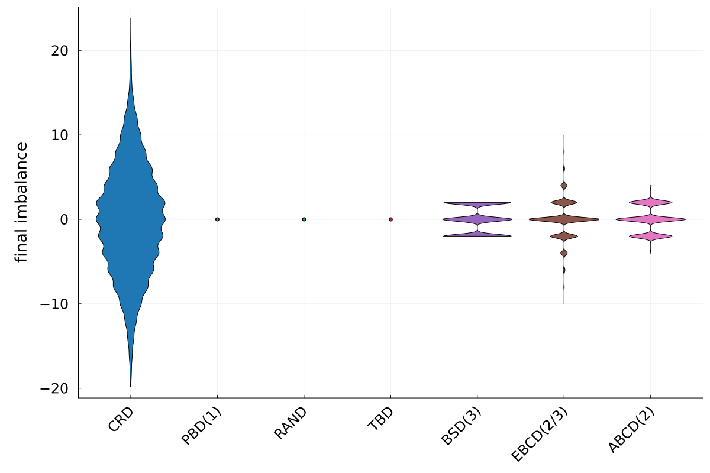
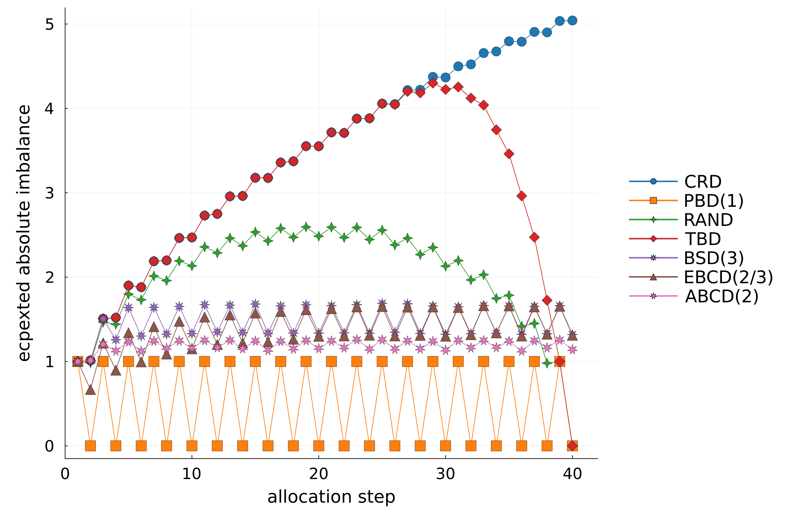
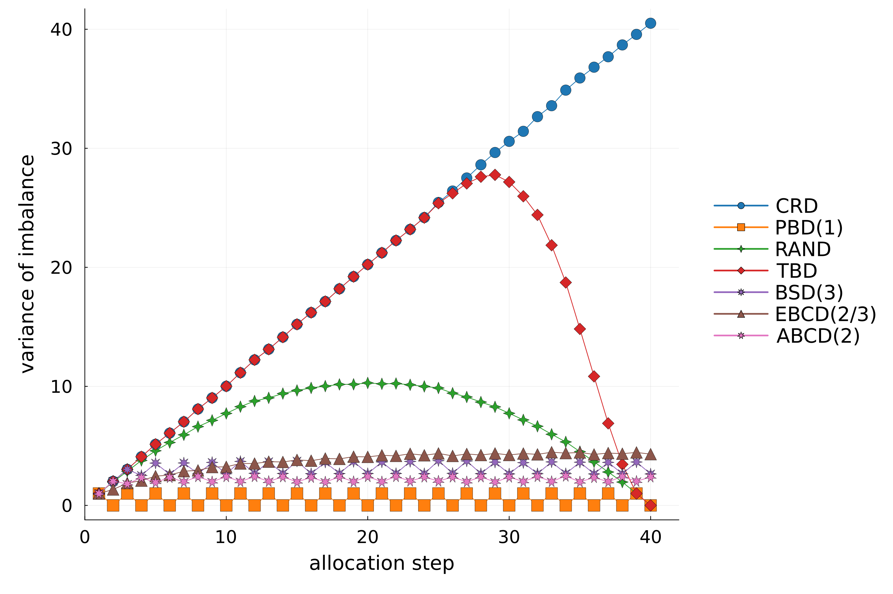
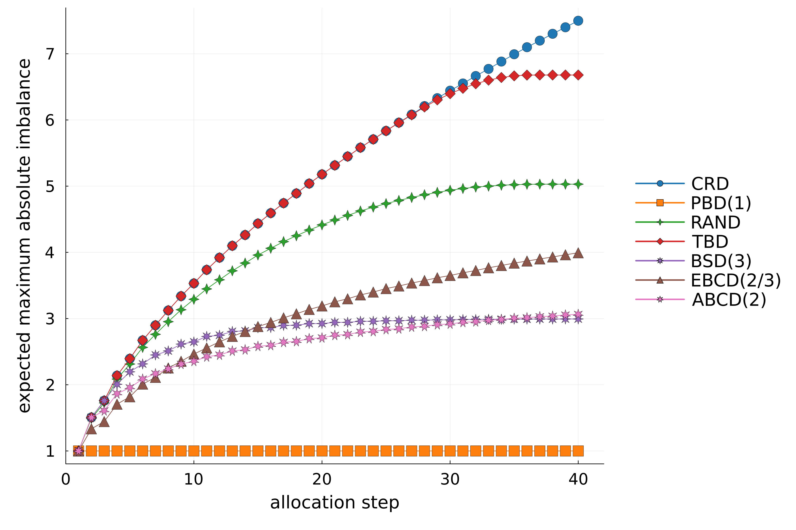
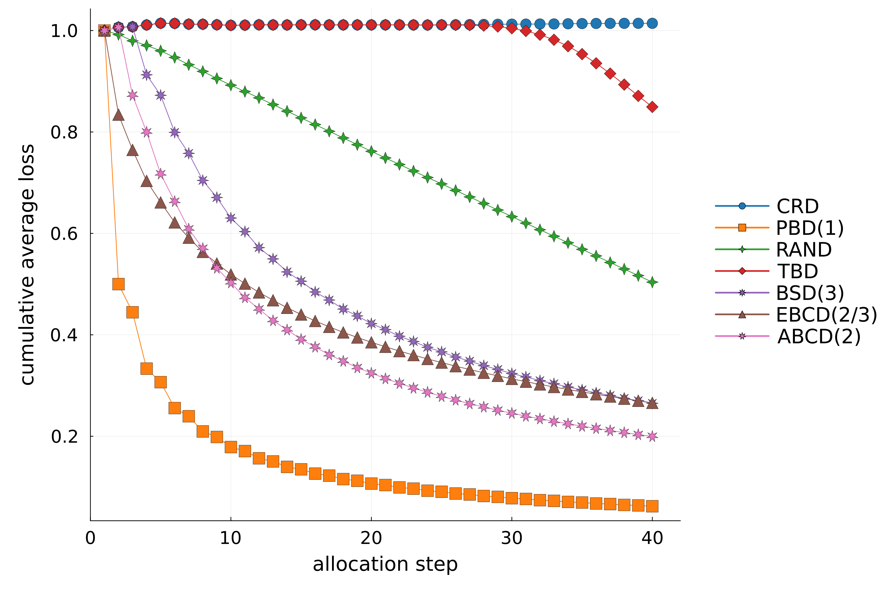
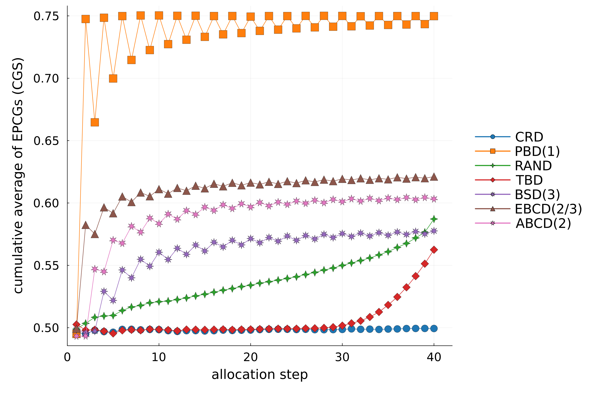
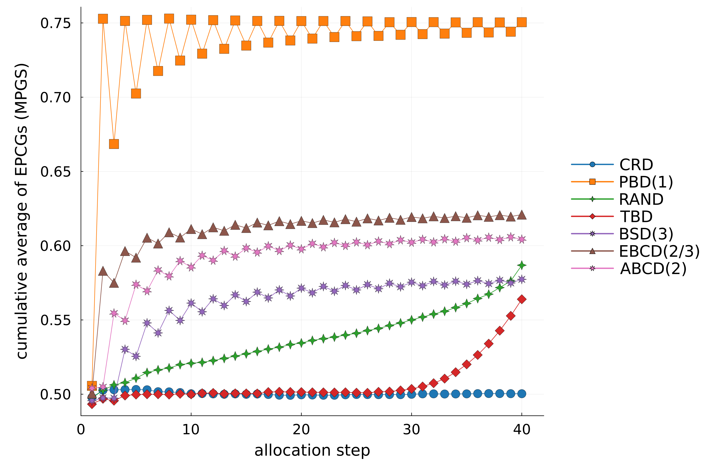
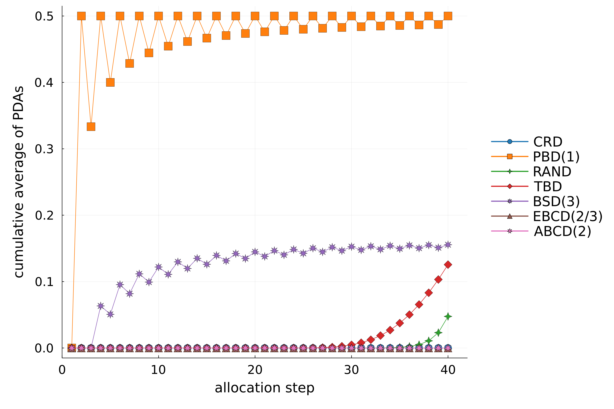
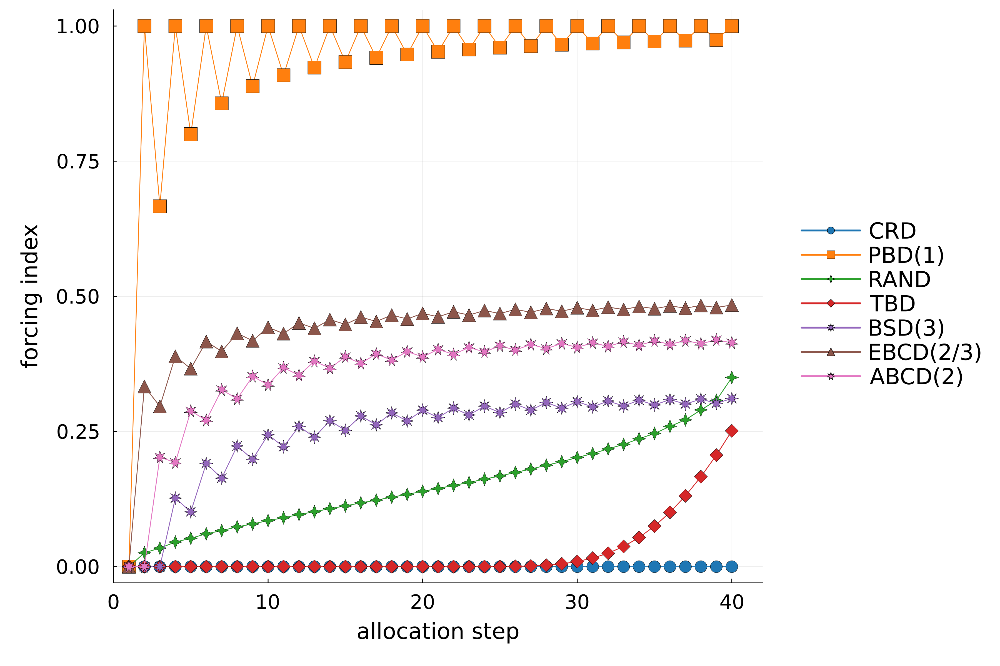
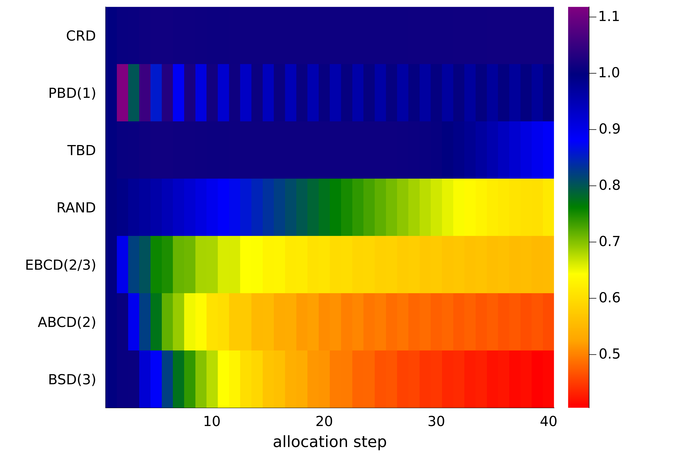

Simulation example 1
Simulation setup
Here, we simulate several randomization procedures, targeting 1:1 allocation.
The following procedures will be simulated:
- Comletele Randomized Design (
CRD). - Permuted Block Design with a block size equal to 2 (
PBD(1)). - Random Allocation Rule (
RAND) - Truncated Binomial Design (
TBD) - Big Stick Design with $mti=3$ (
BSD(3)). - Efron's Biased Coin Design with $p = \frac{2}{3}$ (
EBCD(2/3)). - Adjustable Biased Coin Design with $a = 2$ (
ABCD(2)).
We set sample size $n=40$ and perform $10,000$ simulations.
Simulation run
using Incertus
# sample size
nsbj = 40;
# number of simulations
nsim = 10000;
# randomization procedures to be simulated
rnd = [CRD(), PBD(1), RAND(nsbj), TBD(nsbj), BSD(3), EBCD(2//3), ABCD(2)];
# simulation run
sr = simulate(rnd, nsbj, nsim);
# ========== Calculating operational characteristics ==========
# calculating final imbalance, given simulations' output (`sr`)
final_imb = calc_final_imb(sr);
# calculating expected absolute imbalance vs. allocation step, given simulations' output (`sr`)
expected_abs_imb = calc_expected_abs_imb(sr);
# calculating variance of imbalance vs. allocation step, given simulations' output (`sr`)
variance_of_imb = calc_variance_of_imb(sr);
# calculating expected maximum imbalances over first allocation steps, given simulations' output (`sr`)
expected_max_abs_imb = calc_expected_max_abs_imb(sr);
# calculating cumulative average losses over first allocation steps, given simulations' output (`sr`)
cummean_loss = calc_cummean_loss(sr);
# cumulative average of expected proportions of correct guesses over first allocation steps under the convergence guessing strategy,
# given simulations' output (`sr`)
cummean_epcg_c = calc_cummean_epcg(sr, "C");
# cumulative average of expected proportions of correct guesses over first allocation steps under the maximum probability guessing strategy,
# given simulations' output (`sr`)
cummean_epcg_mp = calc_cummean_epcg(sr, "MP");
# cumulative average of expected proportions of deterministic assignments over first alocation steps, given simulations' output (`sr`)
cummean_pda = calc_cummean_pda(sr);
# calculating forcing index vs. allocation step, given simulations' output (`sr`)
fi = calc_fi(sr);
# Evaluating balance-randomness tradeoff vs. allocation step
brt = calc_brt(sr);
# ========== Visualizing results ==========
# making a violin plot of final imbalances
violin(final_imb)
# making a plot of the expected absolute imbalances
plot(expected_abs_imb, ylabel = "ecpexted absolute imbalance")
# making a plot of the variances of imbalance
plot(variance_of_imb, ylabel = "variance of imbalance")
# making a plot of expected maximum absolute imbalances over first allocation steps
plot(expected_max_abs_imb, ylabel = "expected maximum absolute imbalance")
# making a plot of cumulative average losses over the first allocation steps
plot(cummean_loss, ylabel = "cumulative average loss")
# making a plot of cumulative averages of expected proportions of correct guesses over first allocation steps
# (under the convergence guessing strategy)
plot(cummean_epcg_c, ylabel = "cumulative average of EPCGs (CGS)")
# making a plot of cumulative averages of expected proportions of correct guesses over first allocation steps
# (under the maximum probability guessing strategy)
plot(cummean_epcg_mp, ylabel = "cumulative average of EPCGs (MPGS)")
# making a plot of cumulative averages of expected proportions of deterministic assignments over first alocation steps
plot(cummean_pda, ylabel = "cumulative average of PDAs")
# making a plot of forcing indeces vs. allocation step
plot(fi, ylabel = "forcing index")
# making a plot of forcing indeces vs. allocation step
heatmap(brt)
Progress: 26%|██████████▊ | ETA: 0:00:00
Progress: 53%|█████████████████████▌ | ETA: 0:00:00
Progress: 79%|████████████████████████████████▎ | ETA: 0:00:00
Progress: 100%|█████████████████████████████████████████| Time: 0:00:00
Progress: 47%|███████████████████▍ | ETA: 0:00:00
Progress: 95%|██████████████████████████████████████▉ | ETA: 0:00:00
Progress: 100%|█████████████████████████████████████████| Time: 0:00:00Simulation results
A violin plot of the final imbalance after all treatment assignmnets complete

Expected absolute imbalance vs. allocation step

Variance of imbalance vs. allocation step

Expected maximum absolute imbalance over first allocation steps

Cumulative average loss over first allocation steps

Cumulative averages of expected proportions of correct guesses over first allocation steps (under the convergence guessing strategy)

Cumulative averages of expected proportions of correct guesses over first allocation steps (under the maximum probability guessing strategy)

Cumulative averages of expected proportions of deterministic assignments over first alocation steps

Forcing indeces vs. allocation step

Balance-randomness tradeoff vs. allocation step
